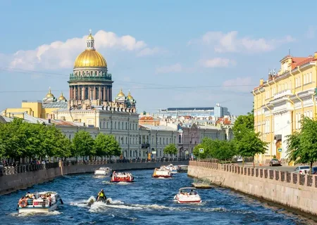
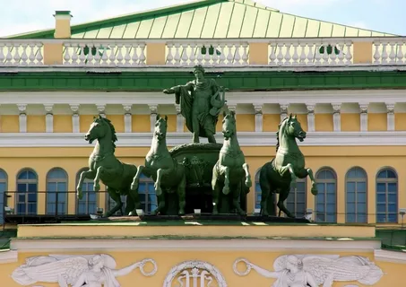

Санкт‑Петербург — второй по величине город России, культурная столица с богатой историей, уникальной архитектурой, знаменитыми музеями и театрами, а также символом города — белыми ночами.
Санкт‑Петербург заметно выделяется среди других городов России европейским обликом, строгой ансамблевой застройкой и обилием памятников архитектуры, при этом сочетает статус крупного культурного центра с особой атмосферой белых ночей и литературно‑историческим наследием, отличающим его от более динамичной Москвы и провинциальной размеренности других российских городов.
Экономика Санкт‑Петербурга отличается устойчивостью и разносторонним развитием: её основу составляют промышленность (в том числе судостроение и машиностроение), IT‑сектор, туризм и потребительский рынок; при этом город демонстрирует рост ВРП, высокий уровень инвестиций, стабильную занятость и увеличение зарплат.

Санкт‑Петербург — культурная столица России: в нём сосредоточены знаковые музеи (Эрмитаж, Русский музей), прославленные театры (Мариинский, Александринский), памятники архитектуры, а богатая литературная и музыкальная история города переплетается с активной современной арт‑сценой.
Санкт‑Петербург — одно из главных туристических направлений России: гостей привлекают архитектурные ансамбли центра, знаменитые музеи и театры, прогулки по рекам и каналам, развод мостов и феномен белых ночей, а развитая инфраструктура и разнообразие маршрутов — от классических экскурсий до современных арт‑пространств — позволяют открыть город с разных сторон.